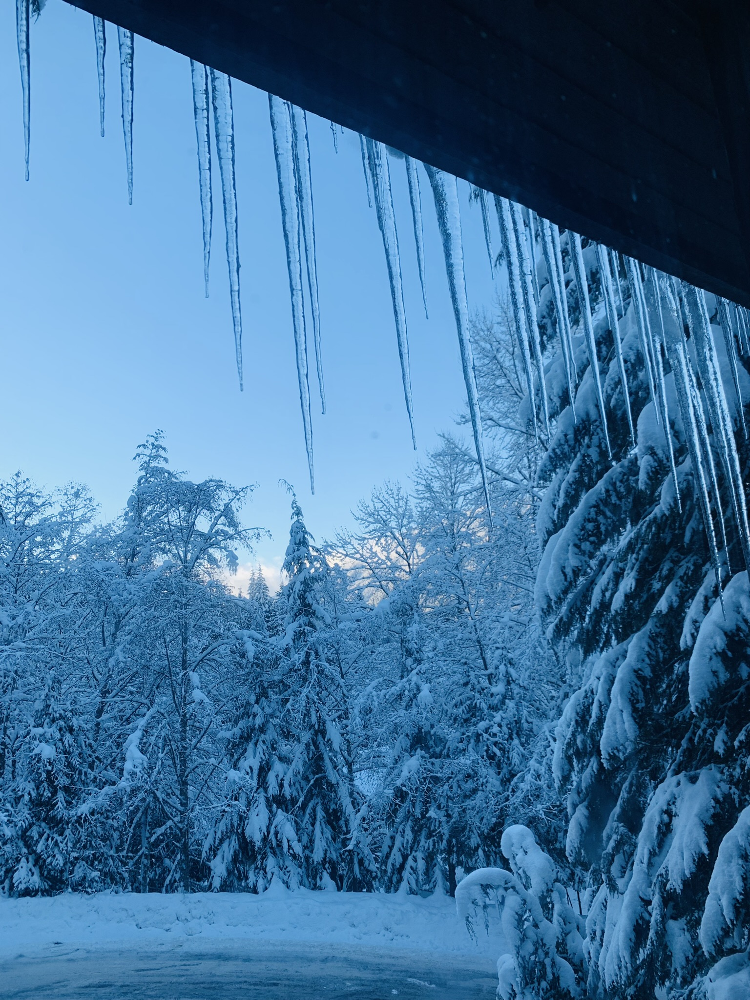
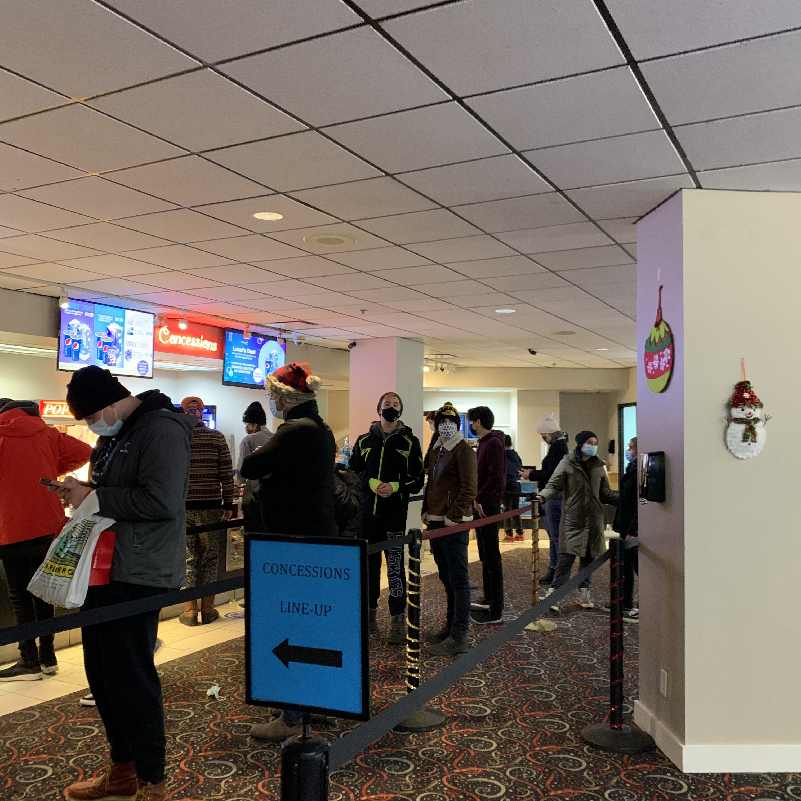
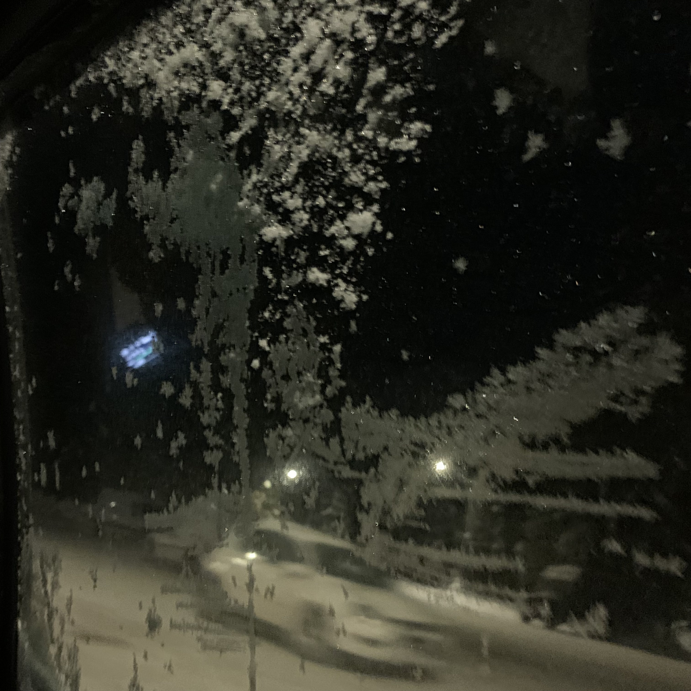

This web is restricted only to my family and some of my friends.
Dec 9 2021
NO PAIN, NO GAIN
2021/12/08 in Whistler.
인생 최초로 술없이 취한 날.
이게 현실인가 믿기지 않아서 눈을 몇번이나 비볐고, 앞에 날리는 눈들이 진짜인가 싶어 입을 벌려 먹어도 봤다.
사람인생 모른다고하지만 일단 내인생 22년 중 오늘은 최고의 날이었다.
자전거를 탔을 때 하루 종일 youtube를 통해 휘슬러 바이크 파크를 보았고, 그 후 시간이 흘러 스키를 시작했을 때도 종일 휘슬러 블랙콤을 꿈에 그렸다.
장엄한 산. 그 속의 무수한 트레일, 그 안의 무수한 슬로프. 언젠가 한번 가 보리라 하는 내 바램은 이미 보름 전에 이뤄졌고. 바로 오늘 나는 꿈을 이뤘다는 것을 비로소 느꼈다.
술을 먹지 않았어도 미친 사람처럼 킥킥댔고, 마치 최면에 걸린 듯 몸이 부웅 뜨는 기분이었다. 이런 기분은 스키를 타다가 이런 생각을 했을 때 느껴 졌는데. 그 생각은 바로 “와… 나 진짜 여기 왔네… 나 여기서 스키 타고 있어” 이다.
휘슬러를 처음 본 그 때 부터 지금까지 그 곳에 가고자 하는 마음을 잃지 않은 것과, 그동안 매 겨울마다 스키 실력을 꾸준히 늘려온 것, 그리고 캐나다에 오기 위해 돈을 모으고, 계획을 세우고, 그것을 실천한 것은 PAIN
그리고 그 모든 것들은 Turned into the GAIN.
휘슬러 정상에 올랐다.
----------------------------------------------------------------------------

Dec 18 2021
As usual
이제 스키장 가는 것도 익숙해 졌고, 이 집에서 지내는 것도 익숙해졌다.
아침부터 이른 오후까지 일을 하고, 할게 없어서 whistler village로 향했다. 최근 망가진 스키를 대체할 다른 스키도 좀 구경할 겸 뭐.. 매일 할거 없어도 집에만 있는게 무료해서 그냥 사람 많은 곳에 가서 서성이는 것 같다.
오늘은 특별히 할게 하나 있었는데, 이전 날인 17일 금요일에 산에서 Racing events 일을 하다가 슬로프 중턱에 있는 창고 겸 스태프 휴식 공간에 스키 폴과 가방을 두고 왔는데, 오늘 일한 내 친구가 일을 끝내면서 찾아 준다고 해서 그 친구를 만나러 갔다.
사실 잊어먹고 온 것이 아니고 슬로프 밑에서 펜스 철거 하고 있었는데 모두 정신차리고 보니까 리프트 운행이 종료됐다... 그래서 걸어 올라가서 짐을 가져올까 고민했는데, 걸어 올라가면 한시간에서 두시간 걸린대서 차라리 자기들이 내일 일하면서 찾아 주겠다고 했다. 고마운 친구들ㅜㅜ
지갑과 핸드폰은 주머니에 있었지만 가방에도 꽤 중요한게 있었다. 그렇지만 도저히 한시간 넘게 스키 부츠 신고 캄캄해진 산을 오르락 내리락 할 순 없을 것 같아 '그래 고마워ㅜㅜ'라고 말하고 같이 산을 내려왔던 것이다.
어쨌든 그렇게 가방을 찾고 (Thank you Richard!) clearance center로 스키를 보러가려 하던 찰나 태주형을 만나서 같이 grocery도 가고 맥도날드도 갔다. 햄버거 잘 먹었습니다 헝ㅎㅎ.
매일 이렇게 뺑뺑 돌아다니다 보니 집에 돌아오면 체력이 방전되서 항상 다음날 일어나기가 너무 힘들다..... 그렇지만 이렇게 안하면 일단 잠들기가 힘들다는 사실ㅋㅋㅋㅋㅋ.
오랜만에 이렇게 일기도 쓰는 여유도 생기고~ 역시 휴일이 좋긴 좋아!
----------------------------------------------------------------------------

Dec 20 2021
Being with somebody
내가 있는 Bayshore기준으로 Spring creek 방향 쪽 어딘가에 사고가 났다. 그래서 버스 정류장에서 버스를 한시간 넘게 기다렸지만 결국 오지 않아서 그냥 빌리지 가는것은 포기하고 creekside로 발걸음을 옮겼다.
진짜 추워 뒤지는 줄 알았다. 안그래도 한시간 넘게 기다리느라 온 몸이 꽁꽁 얼었는데 바람도 많이 불어서 아주 귀가 떨어져 나갈 듯 했지만 grocery 안으로 들어가서 몸을 녹였다.
'오늘은 뭘 해먹지'라고 고민은 했지만.. 괜히 또 돈 많이 쓰기도 싫고 이미 집에 먹을게 좀 있고.. 그래도 뭔가 다른걸 먹고 싶기도 해서 스위트 콘 한캔, 치즈 320g, 주스 하나를 사들고 간단한 간식을 해 먹고 자리라며 다짐하고 집으로 향했다.
마스크를 쓰고 걸었던 탓에 입김을 맞은 눈썹들은 얼어서 엉겨 붙어버렸다ㅋㅋㅋㅋ. 그렇게 총총 걸어서 집 문을 열고 들어가니 eliot 과 gibi가 막 외출을 하려던 참이었다! 간단히 인사를 하고 어디 가냐고 밖에 개 춥다고 으으 떨면서 신발을 벗으려고 하는데,, 스파이더맨 보러 영화관 간다고 그러는 것이다 그리고 같이 갈래? 라고 묻길래 시간 한번 확인하고 아직 5시도 안된 시간이길래 okay!외치고 다시 따라 나섰다ㅋㅋㅋㅋㅋㅋㅋ
다행히 친구들은 차가 있어서 얻어 타고 이동했다ㅎㅎ. 정말 오랜만에 가보는 영화관이라 마냥 들떴다. 일단 빌리지에 도착해서 crystal에서 치킨윙과 맥주 한잔씩 하면서 수다 떨다가 7시가 좀 넘은 시간에 맞춰서 영화관으로 향했다.
규모는 그리 크지 않았지만 문제가 되진 않았다. 유동인구에 딱 알맞는 규모랄까. 어쨌든 그동안 난 군대에 있었고, 딱히 평소에 영화를 보러가지 않았으니 이건 거진 4년만인가 싶다. 그리고 마블 영화를 마지막으로 보러 갔던 것은 정말 백만년 전 이야기...
마트에서 사 들고 온 초콜릿 몇개를 까 먹으면서 영화를 보기 시작했다. no way home spyder man. 아주 아주 재밌었다ㅎㅎㅎ 영화를 볼 사람도 있으니 내용은 쓰지 않겠다. 아직 리스닝이 많이 부족하지만 그래도 맥락 정도는 이해하고 영화를 즐길 수 있는 정도라 아주아주 다행이었다ㅋㅋㅋㅋㅋ. 하마터면 진짜 재미없게 보고 나올뻔... 무려 17달러나 하는데 말이야...
하지만 영화에서 나오는 개그코드는 정말이지 사실 10개 중 1개정도만 알아듣고 웃을 정도...? 영어권 유머를 알아 듣기엔 아직 멀었나보다..ㅜ ㅋㅋㅋㅋㅋ그래도 영화관에서 사람들 웃으면 덩달아 웃김ㅋㅋㅋㅋㅋㅋ.
오늘 하루 이렇게 재밌게 마무리를 지었고 내일은 다시 일 하러가는 날이다. 열심히 일하면 또 쉬는 날이 오겠지. 열심히 하자!! 또 CSIA LEVEL TEST도 신청한 현재 나는 쉴 틈이 없다.. 그래도 다 내가 좋아서 하는거니까 몸이 닳아 없어질 때 까지 노력해야지.
정말 재밌는 하루 잘 살다 갑니다~ 제발 내일 아침 일찍 일어나서 맛있는 아침밥 차려먹을 수 있길 빌며 모두 Have a good night!